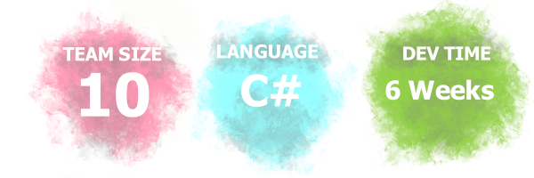
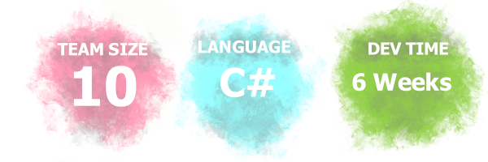
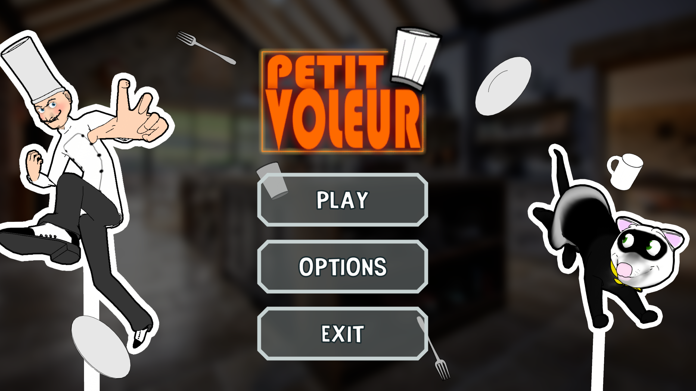

Interstellar was an end of year assessment for 1st year at AIE, we had to work as a team to create a game within 6 weeks. I worked alongside 1 other programmer that helped me improve my skills showed me some new techniques that I had never been able to do before. On this project I was resonsible for gameplay aspects such as: The Third Person Camera, Colour Changer, TV scrolling script, Timer Script & the gravity script which sucks the player out the ship when the game ends.
I learnt alot in those 6 weeks about how a team works when making a game, how big or little the scope has to be to be considerer a enjoyable game. I enjoyed working with everyone on the team & gained alot of experience & new knowledge about topics. My workflow on this project began a little slow since I was still a bit confused with some aspects of programming but eventually pushed myself to understand so I would not let my team down. Overall I was very happy with how the game had turned out & couldn't have done it without my team members.
Petit-Voleur was an AIE 1st year programming assessment where I had to work in a team with 3 other programmers & we had to create a game for 2 different platforms. We chose to develop our game for Android & for in browser, I had a small part on this project but also did some work besides programming on the assessment. On this project I was resonsible for the Timer & also modelling assets for the game, using the skills I already had with 3D modeling I created a few small props as well as the Chef & Richard the ferret.
Due to the short amount of time we had on the project I wasn't able to make the models highly detailed or better than what I was able to do in the time. Looking forward I enjoyed making this project a ton & even made some friends along the way too as well as gaining more experience that helped me improve.
Physics-World was the advanced part of our Physics unit at AIE where we had to demonstrate usage of physic objects & interaction between them in Unity. The project is more of a tech demo than an actual game, it allows the user to interact fully with everything in the environmen. The environment is full of Rigidbodys & Kinematic props that can be picked up by the player & will stay with them till they drop it, using the props they pick up they can find a copy station & duplicate the item they hold infront of the scanner. Physics-World also gives the player building blocks to stack & build anyway they want.
This project took 3 weeks to finish of the 6 weeks given on the assessment. Physics-World is a project that I love & would go back & do it again if I could, making new mechanics & adding some more elements to make it more of a game rather than a tech demo. The project isn't perfect of course but given enough time I am pretty sure I would have gone further with it.

Graphics-World was the advanced part of our Graphics unit at AIE. Sharing a simialir design & concept as Physics-World, this project is meant to demonstrate shaders & material interaction in games. Graphics-World is a tech demo that allows players to interact with different parts of the environment & change their colours & materials during run time. Players can also navigate to the Shader Lab which allows the player to make their own shaders during run time which gets applied to a sphere that is in a glass case.
Graphics-World was built ontop of Physics-World & became a bit more polished, taking 4 ot of the 6 weeks given to complete for the assessmet. This project made me understand alot of new concepts I had tried before & allowed me to think outside the box to create some new unique mechanics. I am satisfied with my effort in the assessment & would love to do it again if I could.

Mesh World is a tech demo that showcases a procedural terrain generator that i made for our complex games unit where we had to research & do our make our own tool or algorithm. I chose to do a terrain generator tool fo unity that allows the user to create simple custom terrains, the terrain creator tool also can be paired up with 2 other extension which are the Terrain Infinite & Terrain Nature tools. Terrain Infinite can be placed onto the same object as the terrain tool & will use the data from the tool to create an Infinite procedural terrain will full LOD support & multithreading.
The other extension is the Terrain Nature which never got fully finished but allowed very simple water generation & allowed a day n' night cycle for the world. I felt pretty stressed & confused at first the project at first but with the help of some tutorials & documentation I was able to pull off a simple terrain generator. I am very proud of Mesh World & hope to come back 7 remake the tools to be better & more optimised than they are currently.

Musophobia was a 2nd year AIE major assessment where we had to work in a team & make a game in 6 months. I was the only programmer on this team of 8 which gave me the opportunity to be the Lead programmer & allowed me to have more freedom when creating scripts for the game. I gained alot of experience in being a lead on the team & showed me how leads communicate with other team leads about things in the development. In this project since I was the only programmer I was resonsible for doing everything from Gameplay to complex systems like doors & AI. My biggets challenge in this project was a fully working inventory systems, key doors & AI interaction with doors. I was able to work through my tasks quickly & fixed bugs within 10 minutes of being found. I am proud of the programming side of things in the game but I do think some aspects could always impove.
VR Bow Game was an AIE assessment for our VR unit where we had to make a VR game for the Meta Quest 2 in 4 weeks. With a team of 9 - 10 we made a bow game where the player has to survive waves of tree monsters that attack the player with projectiles. I was 1 of 2 programmers on the team & I was resonsible for the AI & AI manager systems, I had to create an AI where it would go to the player & position itself to fire projectiles at them. When the player would get to a distant that was considered "too close" the AI would run away & position itself at a safe distant from the player & would make sure it had a clear line of sight of the player so it could get a clean shot at the player.
The other system I was resonsible for was the AI manager, the manager dealt with assigning propertys to all AI & was resonsible for spawning them & destroying them. It had exposed variables that designers or other programmers coudl tweak to get the AI to act the way they want. I enjoyed working on this project a ton & would love to make another VR game some time in the future.

Based on my original AIE physics assessment Physics-World I decided to remake the tech demo into an actual game, This Physics-World is a physic based puzzle game for android & PC that has players play as a red bouncy ball dropped by a childed. Players will need to figure out how to use their different environments to their advantage to reach the end point, However not everything in the environment will help the player but certain things can cause the player harm. The game features different stages with 10 levels each, each with different themes & different hazards & puzzles.
This remake is solo only & I don't have a team working on it with me, this remake is a personal project that I feel really passionate about & I hope that others will find the game fun & hope it all goes well during its development. I will be doing everything from design, art & programming with this game & hope to release it before 2023.

Those Nights at Randy's 5: Radiation is apart of a Fnaf fan series I began back in 2015. This game is a solo project that I am working on for 2023, using the Unity HRDP pipeline I plan to make it as realistic as possible & give the players a really creepy vibe with new redesigns. The player will be required to complete a week trial to earn a position at Randal & Friends Diner, completeing tasks given by their supervisors to prove that they can handle the workload that must be done.
Players will also need to defend themselves from the attractions that attempt to harm them any way they can. The game will offer a full story mode with additional modes that were previously seen in Those Nights at Randy's 4, giving players alot of content to play.